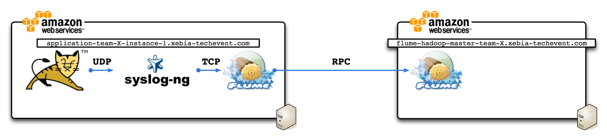

Goal
The goal of this exercise is to centralize all you log in one node and store them in a file (or directory).

Configure flume agent
Edit flume-ng configuration /etc/flume/flume.conf
Add syslog source
agent.sources = syslog
agent.channels = memoryChannel
agent.channels.memoryChannel.type = memory
agent.channels.memoryChannel.capacity = 10000
agent.sources.syslog.type = syslogtcp (or syslogudp)
agent.sources.syslog.port = 5140
agent.sources.syslog.host = 127.0.0.1
agent.sources.syslog.channels = memoryChannel
Add a sink to a flume agent
agent.sinks = avro-forward-sink
agent.sinks.avro-forward-sink.channel = memoryChannel
agent.sinks.avro-forward-sink.type = avro
agent.sinks.avro-forward-sink.hostname = flume-hadoop-master-team-X.xebia-techevent.com
agent.sinks.avro-forward-sink.port = 5141
Configure a flume collector
On flume second agent edit flume configuration file /etc/flume/flume.conf
Source from the first agents
agent.sources = avro-collection-source
agent.channels = memoryChannel
agent.channels.memoryChannel.type = memory
agent.channels.memoryChannel.capacity = 10000
agent.sources.avro-collection-source.channels = memoryChannel
agent.sources.avro-collection-source.type = avro
agent.sources.avro-collection-source.bind = 127.0.0.1
agent.sources.avro-collection-source.port = 5141
Sink to file
agent.sinks = fileSink
agent.sinks.fileSink.type = FILE_ROLL
agent.sinks.fileSink.channel = memoryChannel
agent.sinks.fileSink.sink.directory = /var/log/flume
Write collected log to a file. On this file you should see log of all server.